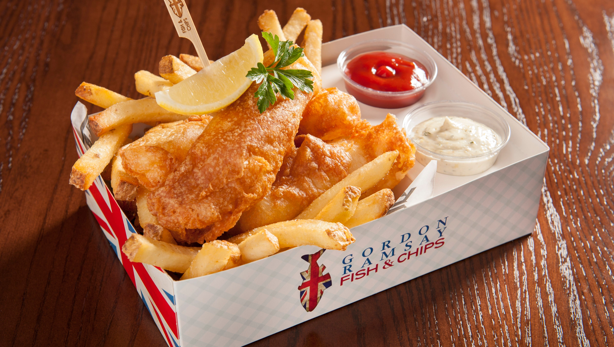

Description
Mouthwatering and appetizing fish and chips is a national England dish that
everyone can't help but love.
You can buy them from one of the thousands of fish and chip shops all over
the country, including the world-famous Gordon Ramsay's—or you can make them
at home.
Homemade potstickers are easier to make than you think, and they taste
10000x better than the store-bought ones!
Ingriedients
- 120 Grams Self Rising Flour + additional to coat
- 1 Medium Egg White
- 160 ML (1/2 cup or little under half a bottle) Light Beer or Lager
- 1 Large Waxy Potato, Peeled
- Sunflower Oil
- Salt
- 1 Teaspoon Curry Powder (used twice)
- 1 Teaspoon Baking Powder
For the Tartar Sauce:
- 1 Tablespoon of Gherkins, chopped
- 50 Grams Creme Fraiche
- 200 Grams Mayonnaise
- 3/4 Shallot Diced
- Lemon Juice (about 1 Teaspoon)
- Hot Sauce (Optional)
Instructions
-
Get oil in pan medium-high heat for frying before assembling ingredients.
Do not need a deep pan or pot, a large pan will do
-
In a bowl whisk together flour, baking soda, curry powder and beer. Then
whisk egg whites till there are stiff peaks and fold into batter (if too
heavy add some water)
-
Add teaspoon of curry powder to dredging flour for more seasoning
(optional)
-
Season fish with salt, then coat with flour. Knock off excess flour and
put into batter mixture. Make sure fish is fully battered and ad to oil
-
Once fish is in, baste the fish with oil. Let first side cook until golden
brown and flip. Basting fish with oil on other side. Take pan on and off
oil so that the oil does not get too hot. Fish should be in oil 3-3 1/2
minutes. Once finished put on plate with paper towel and put in warm oven
-
Chop potato into square, then chop into tall skinny fries (the skinnier
the fry the quicker they will cook). Then roll in paper towel to dry any
excess moisture. Add new oil to pain then add potatoes to high heat. Once
fries are browned, remove from oil on to paper towel and add salt.
-
Add all Tartar ingredients together and mix. Add salt to taste and hot
sauce if you want heat.
- Assemble together and enjoy!
Return to top
Return to main page